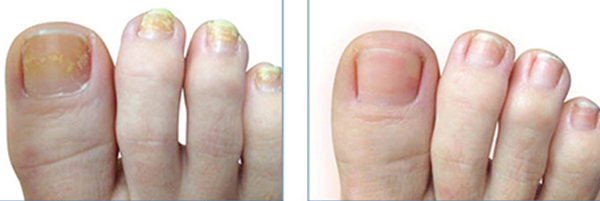
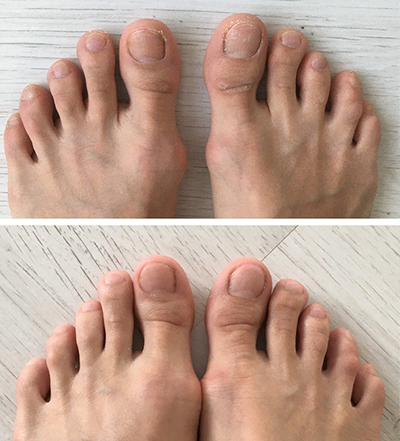

¡CONOCE LAS TERRIBLES CONCECUENCIAS SOBRE LOS HONGOS EN LAS UÑAS ANTES DEQUE SEA ! ¿remedio?
Dr. Daniel Martínez
Tu pregunta fue respondida por:
Dr. Daniel
Martínez
Me llamo Daniel Martínez y llevo más de 30 años trabajando como dermatólogo-micólogo, tratando infecciones fúngicas.
Experiencia profesional: más de 30 años
Me gustaría empezar esta desagradable conversación con algunas cifras: Más del 40% de las personas están infectadas con una versión leve de la micosis y no tienen ni idea de ello. Algunos investigadores estiman que el número de estas personas asciende al 65% de la población. ¡Es aterrador!
Muchas personas no son conscientes de que las consecuencias para su cuerpo seran terribles.
A pesar de percibir el deterioro de sus uñas muchas personas no toman medidas preventivas al momento de presentar los sintomas como:
- Entumecimiento, sensación de hormigueo en las piernas;
- Grietas, descamación de la piel de las piernas;
- Olor desagradable de los pies;
- Oscurecimiento de las uñas de los pies.
Resultados de hongos y bacterias severos que no fueron tratados a tiempo
Qué pasa si no tratas la micosis
El tratamiento de las micosis no es similar al tratamiento de un resfriado común, ni al de las enfermedades pulmonares que pueden curarse con medicamentos convencionales. El hongo es un peligroso enemigo de nuestro cuerpo. Durante su ciclo vital Los hongos emiten toxinas en nuestro cuerpo, lo que empeora el funcionamiento del sistema inmunitario. Esto, a su vez, provoca enfermedades de varios órganos y alergias graves .
Entre las personas mayores de 40 años, las infecciones fúngicas son una de las principales causas de enfermedades respiratorias, asma y enfermedades de los órganos internos. A esta edad, una infección que ataca a los pies puede provocar la inflamación de la piel de toda la pierna. Por lo tanto, no debe posponerse el tratamiento de la micosis. La enfermedad no tratada puede causar una atrofia completa de las uñas, lo que puede tener incluso el efecto de complicaciones que pongan en peligro la vida.
y ahora lo más importante...
Durante su ciclo vital, el hongo produce toxinas como la xantomegnina, las penicilinas, la viomelina y otros agentes antibacterianos. Estas toxinas provocan graves alteraciones somáticas cuando son absorbidas por el organismo. Para ilustrar mejor esta información, te sugiero que veas estas fotos (¡atención! 18+)
Toxicodermia:
Cuerpo infectado
Manos infectadas
Hepatopatía (enfermedad del hígado)
Hígado humano infectado por
Síntomas de enfermedad hepática
Síndrome de Lyell (necrólisis epidérmica tóxica)
Tasa de mortalidad: 80%
Si la infección no se trata en una fase temprana, el hongo empezará a extenderse por el flujo sanguíneo de los órganos internos. Nuestro sistema inmunitario debilitado ya no es capaz de resistir la infección, por lo que pueden producirse complicaciones, como daños tóxicos y alérgicos en el corazón, el hígado, los órganos torácicos y los riñones. Sin una intervención médica inmediata, el riesgo de muerte es del 95%.
Si el tratamiento de la micosis no se inicia inmediatamente, destruye completamente la superficie de la uña, lo que conduce a la pérdida de la misma.
Consecuencias de la micosis de los pies no tratada, visible en la uña
Creo que proporcioné pruebas convincentes para demostrar lo peligrosas que son las enfermedades fúngicas, y que su tratamiento es inaplazable. Estás de acuerdo conmigo, ¿verdad?
Sin embargo, actualmente existe una opinión común que dice que los hongos en las uñas son sólo un problema cosmético que aparece debido a los cambios en nuestro cuerpo y a su envejecimiento. Esto conduce al problema: las personas infectadas no se preocupan por ello y no se toman en serio la posibilidad de tratamiento. A veces puedes encontrarte con el siguiente consejo "basta con lavar la uña con un líquido que contenga un 2% de vinagre, y luego poner una gota de peróxido de hidrógeno en la uña", lo cual es un completo disparate. Si seguimos este supuesto consejo, la situación no hará más que empeorar, porque el entorno alcalino ofrece unas condiciones excelentes para la propagación de las infecciones fúngicas en lo más profundo del cuerpo.
EN LAS FARMACIAS NO ENCONTRARÁS REMEDIOS QUE ACABEN CON LAS INFECCIONES EN LA PIEL.
Opción 1: Tratamiento sistemático
Sólo enmascara los síntomas y pone la enfermedad en un "estado latente". La infección volverá con fuerza al cabo de un tiempo. Te diré la verdad sobre los medicamentos prescritos por los médicos y la razón por la que empecé a estudiar este tema. ESTOS MEDICAMENTOS NO FUNCIONAN.
Opción 2: gotas y esmalte de uñas
Estos productos pueden provocar a menudo reacciones alérgicas agudas.
Esto no es sorprendente, porque el envenenamiento tóxico se produce inmediatamente
después del uso de agentes antifúngicos. Algunos somos más sensibles a ellos, otros
menos.
¡Los hongos en las uñas deben combatirse de la forma más barata!
¡Es la verdad! Científicos estadounidenses del Instituto de Parasitología Molecular
crearon un fármaco que detiene el crecimiento del micelio, bloqueando su capacidad
de multiplicación.
Este remedio se llama . Es
un medicamento antifúngico que contiene tintura de thuja, neem, gobernadora, aceite
de árbol de té y glicerina. Gracias a su fórmula única, es capaz de entrar a través
de la piel y las uñas y matar las células fúngicas.
El equipo del Instituto de Parasitología Molecular consiguió no sólo crear un medicamento antifúngico muy eficaz, sino también ponerlo a disposición de todo el mundo. Tras largas negociaciones, el medicamento fue registrado en la Lista Nacional de Medicamentos Esenciales. Ahora podemos ayudar a cualquier persona afectada por esta enfermedad, incluso si se encuentra en una situación económica difícil. Se puede tratar la enfermedad y evitar que se convierta en una enfermedad más peligrosa. Al estar en la lista, el precio del paquete de medicamentos ¡se redujo al mínimo posible!
¡Esta oferta especial es válida hasta ! Para hacer un pedido, sólo tienes que introducir tu nombre completo y tu número de teléfono.
Las enfermedades como los hongos en las uñas no deben ser ignoradas. ¡Hay que tratarlos antes de que sea demasiado tarde! ¡Te deseamos una buena salud!
¡NOTA! ¡Cuidado con las falsificaciones! Ahora, según la promoción del fabricante, puedes conseguir una muestra de GRATIS

Hoy en día es muy fácil contraer una infección por hongos. Hay suciedad por todas partes y poca higiene. Estamos en constante peligro. Por ejemplo, si nos duchamos en el gimnasio después de un entrenamiento. Allí puedes contraer una infección por hongos. Cuando pedí , mis uñas tenían un aspecto horrible. Pensé que iba a tener que someterme a una terapia con láser y que me iban a extirpar la rodilla dañada. Afortunadamente, conseguí evitarlo. Al cabo de dos semanas, mis uñas parecían haber sido sustituidas por unas completamente nuevas. Todo ello gracias a mi médico -él, como el Dr. Daniel Martínez, me aconsejó que probara .
en el sitio web oficial Me llamaron rápidamente y confirmaron mi pedido.
Quiero lucir hermosa :)
Recientemente vi en la televisión que se mencionó a . Muchos médicos lo recomiendan para el tratamiento. Lo compré y ahora estoy muy contenta con los resultados. Muchas gracias por el artículo.

Gracias. ¡ me ayudó muy rápidamente! ¡Lo compré en el sitio web oficial! No pospongas el tratamiento de la micosis, porque nada podrá detenerla. Cuanto antes empieces el tratamiento, mejor.



Es un milagro. En cuanto me enteré, compré . Ojalá hubiera sabido de su existencia hace cinco años. Llevo muchos años con fuertes dolores y me pican las uñas. ¡Ahora me siento bien y disfruto cada día de mi vida! Muchas gracias.


Lo creas o no, yo tenía el mismo problema. Era débil y no me importaba. Tuve mucha suerte de encontrarme con . Es un verdadero milagro, y lo recomiendo a todo el mundo.

Compré hace unos meses, cuando era mucho más caro, porque todavía no estaba en la lista nacional de medicamentos esenciales. El Dr. Daniel Martínez tenía razón. La infección por hongos desapareció al cabo de dos semanas.
Pedí el medicamento y pronto compartiré mis resultados con ustedes. Me gustaría dar las gracias al Instituto por este producto.